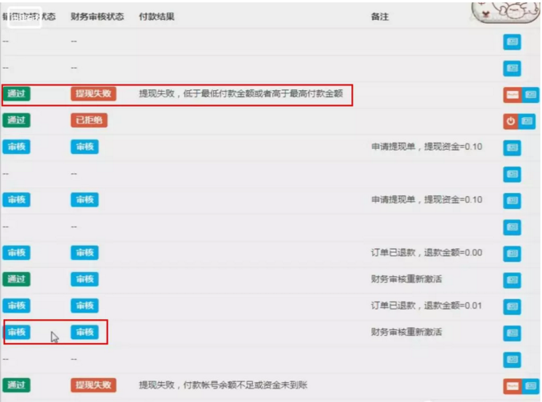

应用场景：
有这么一个返现的系统，当前端客户发起提现的时候，后端就要通过审核这笔返现订单，才可以返现到客户的账号里。
来看看下面的截图

这里的业务场景就是经过两轮审核：销售审核，财务审核都通过后，后端就会付款一笔钱到客户，当然，这里财务审核会有很多种情况，不通过与通过，通过后直接付款又有很多种情况，详细可以查看微信付款到零钱的文档。下面就来看看具体你的代码实现
微信支付配置
1，数据表大概如下
CREATE TABLE `zmq_weixin_config` (
`id` int(1) unsigned NOT NULL AUTO_INCREMENT COMMENT '微信公众平台编号，自增id',
`weixin_name` varchar(10) NOT NULL COMMENT '微信公众平台名称',
`token` varchar(100) NOT NULL,
`appid` char(18) NOT NULL,
`appsecret` char(32) NOT NULL,
`access_token` varchar(300) NOT NULL,
`api_ticket` varchar(300) DEFAULT NULL COMMENT '微信卡包api_ticket',
`api_ticket_expired_at` datetime DEFAULT NULL COMMENT '微信卡包api_ticket过期时间',
`mchid` varchar(20) DEFAULT NULL COMMENT '商户号',
`mchkey` varchar(50) DEFAULT NULL COMMENT '支付密钥',
`expired_at` timestamp NULL DEFAULT NULL COMMENT 'access_token过期时间，会自动更新',
`updated_at` timestamp NULL DEFAULT NULL COMMENT '记录更新时间',
`created_at` timestamp NULL DEFAULT NULL COMMENT '创建时间',
`sort_order` smallint(5) NOT NULL DEFAULT '0' COMMENT '排序',
`points_url` varchar(100) DEFAULT NULL,
PRIMARY KEY (`id`)
) ENGINE=MyISAM AUTO_INCREMENT=11 DEFAULT CHARSET=utf8 CHECKSUM=1 DELAY_KEY_WRITE=1 ROW_FORMAT=DYNAMIC COMMENT='微信配置表';2 .config的配置方法
/**
* 获取微信支付配置
* 这里我是把配置信息存储在数据表里，方便调用
* $param是从controller里传值过来：weixin_config_id，notify_url
* @return array
*/
public function getWechatConfig($param)
{
$weixin = WeixinConfigBaseModel::find($param['weixin_config_id']);
if (empty($weixin)) {
throw new Exception('微信配置ID错误');
}
return [
'wechat' =>[
$app_id => $weixin->appid,
'mch_id' => $weixin->mchid,
'notify_url' => empty($param['notify_url']) ? '' : $param['notify_url'], //回调url
'key' => $weixin->mchkey,
'cert_client' => resource_path().'/wechat/'.$weixin->id.'/apiclient_cert.pem', //证书与key
'cert_key' => resource_path().'/wechat/'.$weixin->id.'/apiclient_key.pem',
]
];
}企业付款到个人零钱核心代码
/**
* Function:企业付款到个人零钱
* Author:cyw0413
* @param $openid
* @param $trade_no
* @param $money
* @param $desc
* @return array
*/
public function weixinPay($input){
$config = $this->getWechatConfig($input);
$params["mch_appid"]= $config['wechat']['app_id'];
$params["mchid"] = $config['wechat']['mch_id'];
$params["nonce_str"]= date("YmdHis").mt_rand(100,999);
$params["partner_trade_no"] = $input['trade_no']; //商户订单号
$params["amount"] = $input['amount'];
$params["desc"] = $input['desc'];
$params["openid"] = $input['openid'];
$params["check_name"]= 'NO_CHECK';
$params['spbill_create_ip'] = $_SERVER['SERVER_ADDR'];
//生成签名
$str = 'amount='.$params["amount"].'&check_name='.$params["check_name"].'&desc='.$params["desc"].'&mch_appid='.$params["mch_appid"].'&mchid='.$params["mchid"].'&nonce_str='.$params["nonce_str"].'&openid='.$params["openid"].'&partner_trade_no='.$params["partner_trade_no"].'&spbill_create_ip='.$params['spbill_create_ip'].'&key='.$config['wechat']['key'];
//md5加密 转换成大写
$sign = strtoupper(md5($str));
//生成签名
$params['sign'] = $sign;
//构造XML数据
$xmldata = $this->array_to_xml($params); //数组转XML
$url='https://api.mch.weixin.qq.com/mmpaymkttransfers/promotion/transfers';
//发送post请求
$res = $this->curl_post_ssl($url, $xmldata, $input['weixin_config_id']); //curl请求
if(!$res){
throw new \Exception("服务器连接失败");
}
//付款结果分析
$content = $this->xml_to_array($res); //xml转数组
return $content;
}
/**
* curl请求
**/
public function curl_post_ssl($url, $xmldata, $weixin_config_id,$second=30,$aHeader=[]){
$ch = curl_init();
//超时时间
curl_setopt($ch,CURLOPT_TIMEOUT,$second);
curl_setopt($ch,CURLOPT_RETURNTRANSFER, 1);
curl_setopt($ch,CURLOPT_URL,$url);
curl_setopt($ch,CURLOPT_SSL_VERIFYPEER,false);
curl_setopt($ch,CURLOPT_SSL_VERIFYHOST,false);
//默认格式为PEM，可以注释
curl_setopt($ch,CURLOPT_SSLCERTTYPE,'PEM');
//绝对地址可使用 dirname(__DIR__)打印，如果不是绝对地址会报 58 错误
curl_setopt($ch,CURLOPT_SSLCERT, resource_path().'/wechat/'.$weixin_config_id.'/apiclient_cert.pem');
curl_setopt($ch,CURLOPT_SSLKEYTYPE,'PEM');
curl_setopt($ch,CURLOPT_SSLKEY,resource_path().'/wechat/'.$weixin_config_id.'/apiclient_key.pem');
if( count($aHeader) >= 1 ){
curl_setopt($ch, CURLOPT_HTTPHEADER, $aHeader);
}
curl_setopt($ch,CURLOPT_POST, 1);
curl_setopt($ch,CURLOPT_POSTFIELDS,$xmldata);
$data = curl_exec($ch);
if($data){
curl_close($ch);
return $data;
} else {
$error = curl_errno($ch);
echo "call faild, errorCode:$error\n";
//die();
curl_close($ch);
return false;
}
}
/**
* array 转 xml
* 用于生成签名
*/
public function array_to_xml($arr){
$str='<xml>';
foreach($arr as $k=>$v) {
$str.='<'.$k.'>'.$v.'</'.$k.'>';
}
$str.='</xml>';
return $str;
}
/**
* xml 转化为array
*/
public function xml_to_array($xml){
//禁止引用外部xml实体
libxml_disable_entity_loader(true);
$xmlString = simplexml_load_string($xml, 'SimpleXMLElement', LIBXML_NOCDATA);
$val = json_decode(json_encode($xmlString),true);
return $val;
}财务审核，也就是微信返现到零钱，这个时候会返回成功结果，或者是各种不成功的结果
这里我用一个方法封装
//财务审核
if($param['status'] == 2){
//判断返现金额与修改后的金额
if($before_rebate_amount != $param['rebate_amount']){
//返现金额不相等，则出款金额改变
$out_amount = $param['rebate_amount'] - $before_rebate_amount ;
$this->outMount($business->business_id,$out_amount);
}
if($param['rebate_status'] == 9){
//财务拒绝通过
$business->audit_status = $param['rebate_status'];
$business->rebate_amount = $param['rebate_amount'];
$business->status = 6;
$business->save();
//生成日志
$this->insertWithdrawLog($param['withdraw_id'], $business->status, $business->audit_status, $param['rebate_remark'], $param['admin_id']);
}else{
//提现的各种返回结果
$this->payReturnResult($business,$param);
}
}/**
* Function:微信提现返回的各种结果
* Author:cyw0413
* @param $res
* @param $business
* @param $param
*/
public function payReturnResult($business,$param)
{
$input = [
'weixin_config_id' => 20 ,
'openid' => $business->business->open_id,
'amount' => $param['rebate_amount'] * 100,
'trade_no' => $business->order_sn, //商户订单号
'desc' => "微信提现"
];
$pay = new PayLogBaseService();
$res = $pay->weixinPay($input);
if($res['result_code']=="SUCCESS"){
//提现成功
$business->audit_status = 4;
$business->status = 4;
$business->rebate_amount = $param['rebate_amount'];
$param['rebate_remark'] = "已付款(".$param['rebate_amount'].")";
}elseif ($res['err_code'] == "MONEY_LIMIT"){
$business->audit_status = 3;
$business->status = 3;
$param['rebate_remark'] = "提现失败，已达到付款给此用户额度上限";
//throw new \Exception($param['rebate_remark']);
}elseif ($res['err_code'] == "AMOUNT_LIMIT"){
$business->audit_status = 3;
$business->status = 3;
$param['rebate_remark'] = "提现失败，低于最低付款金额或者高于最高付款金额";
//throw new \Exception($param['rebate_remark']);
egdf
}elseif ($res['err_code'] == "NOTENOUGH"){
$business->audit_status = 3;
$business->status = 3;
$param['rebate_remark'] = "提现失败，付款帐号余额不足或资金未到账";
//throw new \Exception($param['rebate_remark']);
}elseif ($res['err_code'] == "SIGN_ERROR"){
$business->audit_status = 3;
$business->status = 3;
$param['rebate_remark'] = "提现失败，签名错误";
}elseif ($res['err_code'] == "PARAM_ERROR"){
$business->audit_status = 3;
$business->status = 3;
$param['rebate_remark'] = "提现失败，参数错误";
}elseif ($res['err_code'] == "OPENID_ERROR"){
$business->audit_status = 3;
$business->status = 3;
$param['rebate_remark'] = "提现失败，Openid错误";
}elseif ($res['err_code'] == "FATAL_ERROR"){
$business->audit_status = 3;
$business->status = 3;
$param['rebate_remark'] = "提现失败，两次请求参数不一致";
}elseif ($res['err_code'] == "CA_ERROR"){
$business->audit_status = 3;
$business->status = 3;
$param['rebate_remark'] = "提现失败，商户API证书校验出错";
}elseif ($res['err_code'] == "V2_ACCOUNT_SIMPLE_BAN"){
$business->audit_status = 3;
$business->status = 3;
$param['rebate_remark'] = "提现失败，无法给非实名用户付款";
}else{
$business->audit_status = 3;
$business->status = 3;
$param['rebate_remark'] = "提现失败，服务器繁忙，请稍后再试";
//throw new \Exception($param['rebate_remark']);
}
$business->save();
}当微信平台余额不足或者出现各种错误而提现失败的时候，这里还有支持重新付款的功能：其实就是点击按钮后重新调用付款到零钱的功能，知道成功付款
/**
* Function:重新付款
* Author:cyw0413
* @param $param
* @throws \Exception
*/
public function repay($param)
{
if(empty($param)){
throw new \Exception("参数错误");
}
$business = GroupBusinessWithdrawBaseModel::find($param['withdraw_id']);
if(empty($business)){
throw new \Exception("不存在！");
}
if($business->audit_status != 3){
throw new \Exception("状态有错误");
}
//提现的各种返回结果
$this->payReturnResult($business,$param);
}